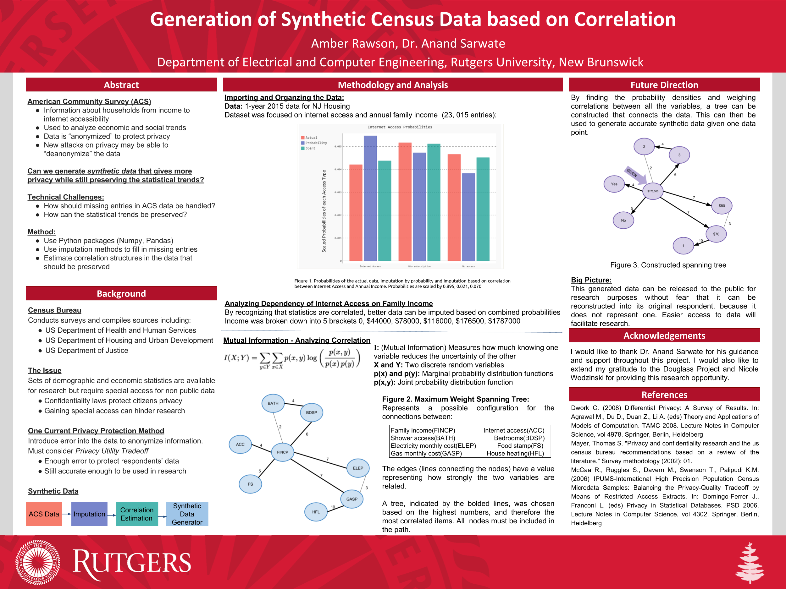

Amber Rawson
amber.rawson@rutgers.edu • 732-735-1505
Education
Rutgers University, School of Engineering
Sept 2016 - Present
Dean’s List - Fall 2016, Spring 2017
Research Experience
Undergraduate Research Assistant, Rutgers University
GRIST Lab Security Protocols
May 2017 - Present
- Collaborated to create a strategy game where attackers strike certain targets while defenders try to counter their attacks and capture them
- Player data is gathered to develop an algorithm that can improve the probability of the attacker being captured, which can then be applied to law enforcement’s defense strategies
- Developed a 3D environment using Unity Game Engine and wrote scripts to realistically spawn crowd agents according to exponential distribution

Industrial Engineering News- GRIST Lab
Synthetic Census Data Generation
Feb 2017 - May 2017
- Used Python libraries to analyze interdependence of factors such as utility costs, annual income, and geographical region in 2015 New Jersey Census housing data
- Measured correlation values to construct a max weight spanning tree that can be used to anonymize data
Outside Activities
Intramural Ultimate Frisbee - Captain
Intramural Volleyball
Makerspace Club
Craft to Cure
Fall 2016
Spring 2016-Present
Fall 2016-Present
Fall 2016-Present
Portfolio
Skelepun
Skelepun- Sidescroller fantasy game created with Unity Game Engine. Scripts written in C#. Art credits go to Nikki Bustillo and Mia Sutton.

Research poster- Electrical and Computer Engineering Department under Professor Sarwate.